| 總分 | 完成後打勾 | 配分 | 分項描述 |
|---|---|---|---|
| 4 | Simple baseline - 完成 baseline 訓練得到訓練分數及訓練權重 | ||
| 4 | Medium baseline - 調整訓練筆數、Epochs 或其他參數得到比 Simple baseline 更高的分數 | ||
| 2 | Strong baseline - 使用不同版本、大小模型進行訓練並繳交 Colab | ||
| -10 | 沒有寫100字心得 |
|
Simple Baseline
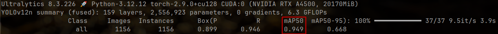
|
|
Medium Baseline
使用下列超參數
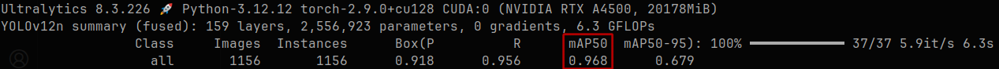
|
|
Strong Baseline
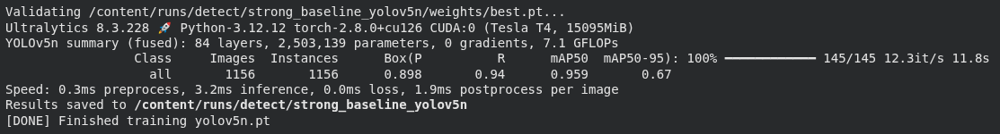
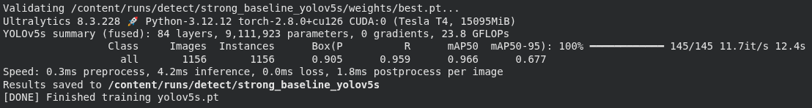
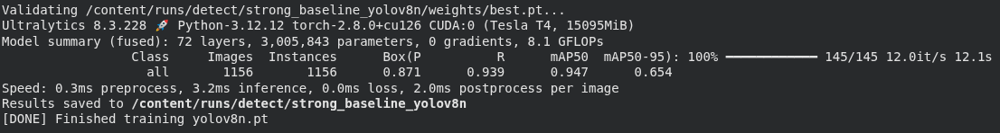
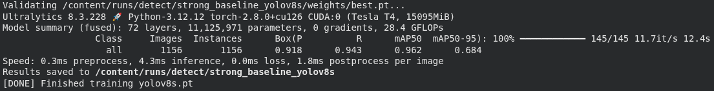
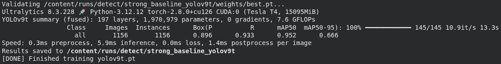
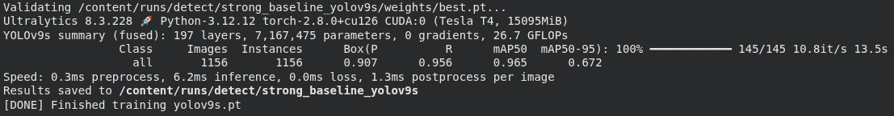
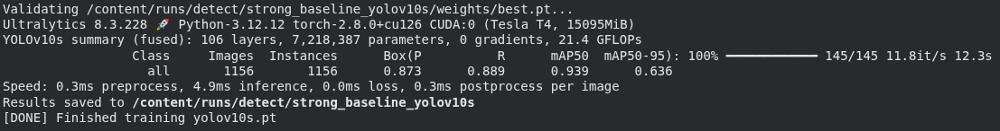
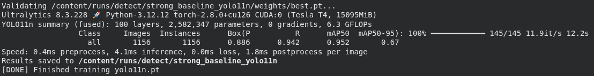
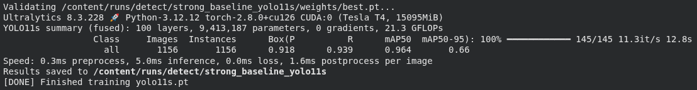
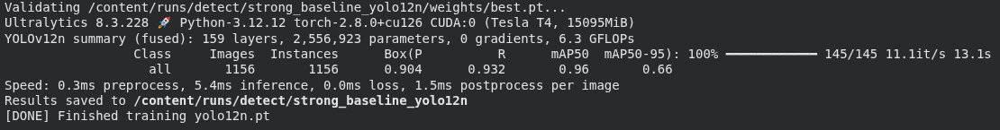
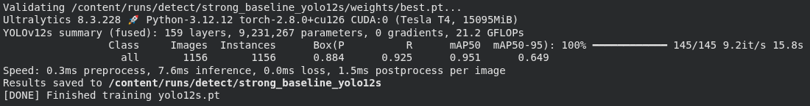
Colab link: https://colab.research.google.com/drive/1ix1IUxDf4f9m_Bf7qRsT277GXKVcIthk?usp=sharing
Weights used:
|